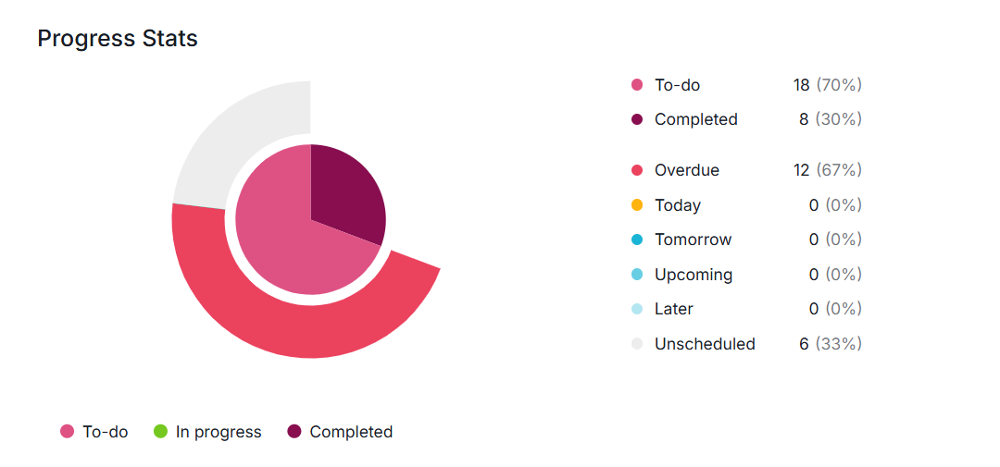
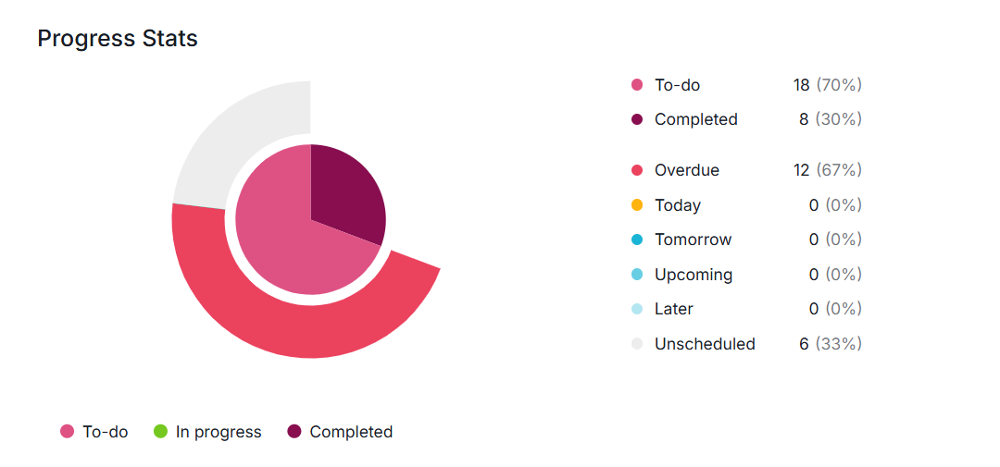

Courses and Projects: From Classes to Creations
Welcome to my "Courses & Projects" page!
This is where I share the journey of my learning and creation. From insightful courses that shaped my technical foundation to hands-on projects that brought ideas to life, you'll find a blend of academic assignments, personal projects, and internship experiences. Each has been a step forward in my growth as an aspiring engineer. Feel free to explore and discover the stories behind the courses I've taken and the projects I've crafted!
Courses
T Here, I highlight some of the most impactful courses I've taken and the key projects I've worked on during my academic journey. These experiences have not only deepened my understanding of critical concepts but also allowed me to apply my skills in practical and innovative ways. From exploring advanced topics to creating unique solutions, each course and project has been a stepping stone in my growth as a developer and problem-solver.
Enterprise Systems (2nd Year Bachelor’s)
This course introduced me to the fundamentals of information systems within the business field, emphasizing their role in streamlining operations. I gained valuable insights into ERP systems, their critical components, and their strong dependency on evolving technologies and software development.
As part of this course, I worked on a project titled "Online Skincare Shop" using Odoo ERP:
- Designed and developed an online skincare shop using Odoo's website builder.
- Managed and integrated multiple Odoo modules, including CRM, billing, inventory, employee management, and supplier/client tracking.
- Created a seamless business workflow by optimizing processes and ensuring efficient system coordination.
Software Project Management
In this course, I explored the principles of project management and agile methodologies, gaining insights into effective planning, collaboration, and iterative development.
I had the opportunity to apply these concepts through the Business Management Simulation Project, where I Managed a self-care and nail salon business, utilizing Quire to learn task management fundamentals and Jira to explore ticketing systems, workflows, and project coordination. This hands-on experience reinforced the importance of organization and adaptability in managing real-world projects.
 

Business Intelligence
This course was a fascinating introduction to the world of business intelligence, focusing on how data analysis can drive business growth and improve profitability. I learned foundational concepts such as clustering, categorization, and gained insights into data mining and analytics.
To deepen my understanding, I worked hands-on with Power BI, exploring how to handle, visualize, and analyze data to uncover meaningful insights. This practical experience brought the theoretical concepts to life, showcasing the powerful role of data in strategic decision-making.
Projects
Welcome to the projects section, where theory meets practice! Here, you'll find a showcase of the diverse projects I've worked on—ranging from academic assignments to personal initiatives and professional experiences. Each project reflects a step forward in my journey of learning, problem-solving, and applying my skills to real-world challenges.
Healthcare Appointment & Services Platform
2022As part of my second-year bachelor's end-of-year group project, I collaborated on building a comprehensive platform to simplify scheduling appointments with doctors and various healthcare service providers. The platform offered additional features such as:
- Digital Medical Records: Secure storage and easy access to patient history.
- Digital Prescriptions:. Effortless prescription management for patients and doctors
- Medicine Pre-Orders: Convenient pre-ordering of medications
- Nearest Open Pharmacies: Real-time updates on available pharmacies.
We developed the platform using Node.js, Express.js, SQL Server, and React.js, showcasing our ability to integrate diverse technologies for a user-centric solution. This project was a great opportunity to collaborate as a team and apply our technical skills to solve real-world healthcare challenges.
Sales Contracts Retrieval Platform
2023During my summer internship, I developed an internal platform for retrieving sales contracts, designed to streamline the search and management process for the company. The platform featured functionalities such as:
- Search by Date: Easily locate contracts based on specific timeframes.
- Search by Sales Point: Filter contracts by their corresponding sales locations.
This project was built using Spring Boot, React.js, and SQL Server, allowing me to enhance my technical expertise and understand the real-world application of these technologies. With the guidance of supervisors and senior colleagues, I successfully delivered a functional solution tailored to the company's internal needs.
internship application and recruitment platform
2023As part of my third-year bachelor's first-semester project, my team and I collaborated on developing a comprehensive internship application and recruitment platform. This project aimed to simplify the process of connecting students and job seekers with potential employers Key features of the platform included:
- Internship Applications: A streamlined process for users to apply for internships tailored to their field of study.
- Recruitment Functionality: Enabling companies to post job listings and manage applicant information.
We built the platform using Node.js, Express.js, MongoDB, and Angular, allowing us to leverage modern full-stack development practices. This experience enhanced my skills in team collaboration, back-end development, and front-end design, as well as working with a non-relational database system.
Leasing Loan Request Submission and Treatment Platform
2024For my end-of-studies project, I designed and developed a leasing loan request submission and treatment platform, focusing on streamlining the leasing credit process and reducing reliance on paperwork. Key features of the platform included:
- Request Submission and Tracking: Users could easily submit and monitor their leasing credit requests online.
- Document Management: A seamless solution for uploading required documents, eliminating traditional paperwork.
- Admin Features: Tools for administrators to review, manage, and process credit requests efficiently.
This project was built using Spring Boot, Angular, and MongoDB, enabling me to integrate a robust back-end system with a user-friendly front-end interface. It was a transformative learning experience, allowing me to apply advanced frameworks and tools to solve real-world problems.